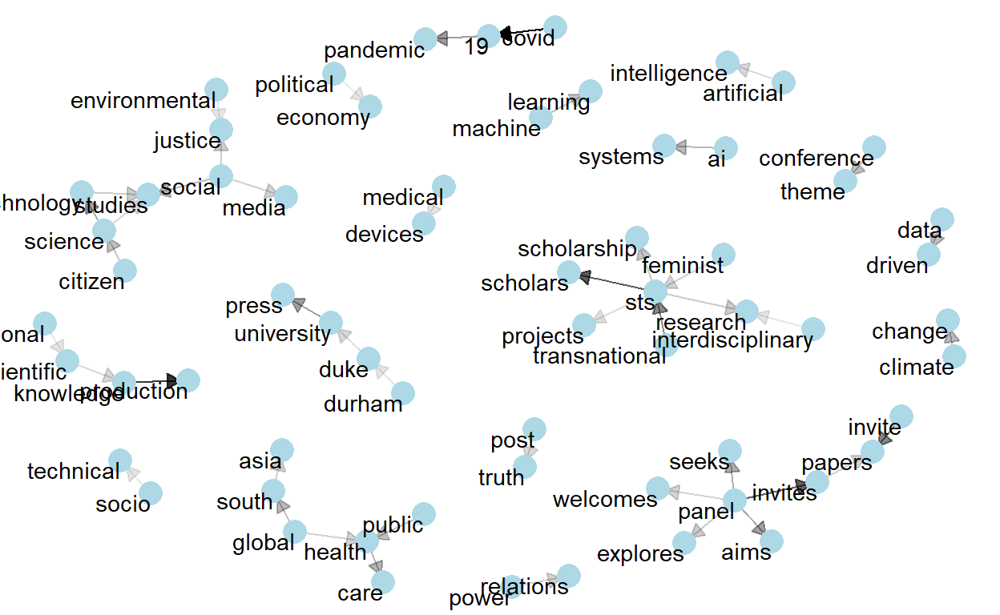
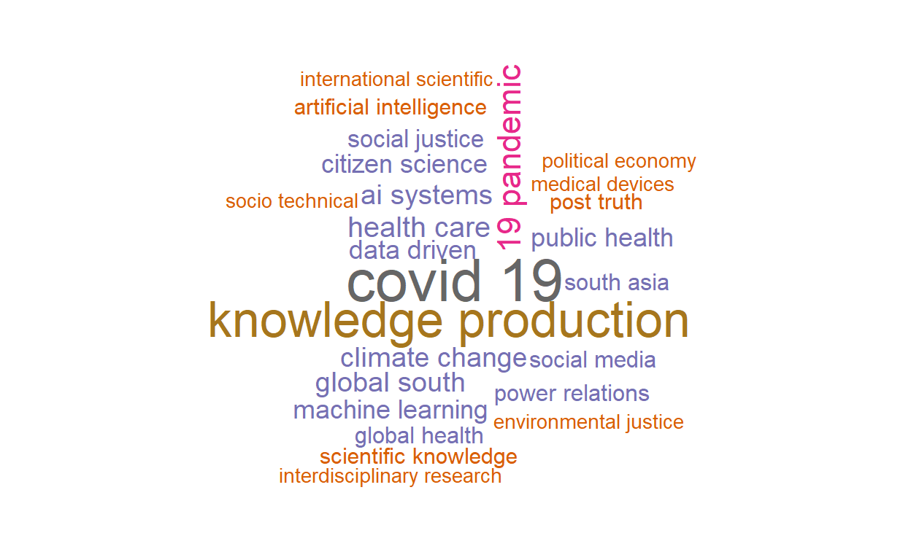

Web scraping and text analysis of the Society of Social Studies of Science’s 2021 annual meeting panels.
I recently went though Julia Silge’s great interactive tidytext tutorial to learn some basics of text analysis. Last weekend, my SO was reading through the panel descriptions of the Society for the Social Studies of Science’s (4S) annual meeting to figure out which panel to submit an abstract to. There were over 200 panels to choose from, and so this would be a good opportunity to practice some of the techniques I learned.
The tidytext tutorial works with data sets that are already nice and clean. For the 4S panels we need to do some web scraping and data cleaning first. The web scraping with rvest is also a first for me. The first part of this post will cover the scraping and cleaning. If you want to read about the text analysis, skip ahead to the second part.
All panels are listed on this page: https://www.4sonline.org/meeting/accepted-open-panels/. We could scrape the panel titles and descriptions right there. Note, however, that the description here is only a snippet, not the full panel description. We’ll deal with this later.
Step one is to load the relevant libraries and read in the html page.
panel_url <- "https://www.4sonline.org/meeting/accepted-open-panels"
panels <- read_html(panel_url)
panels
{html_document}
<html lang="en-US">
[1] <head>\n<meta http-equiv="Content-Type" content="text/html; cha ...
[2] <body class="page-template-default page page-id-12988 page-chil ...The next step is to extract the relevant information from that HTML document. If you have a basic understanding of how HTML and CSS work, you could do this by opening the source code of the page in your browser and manually identify the relevant elements.
Here you see that the panel titles are all level 3 headings (<h3>) of the class entry-title. An easier way to identify the element is by using your browser’s element picker. In Firefox, press F12 and choose the element picker. Then choose the element you want to identify and look at the code in the Inspector window. Here’s a screenshot of what this looks like for the panel description:
So the panel description is a div of the class post-inner-content. (There is a third method to identify relevant content, which we’ll use later).
With this information, we’re ready to extract panel titles and descriptions:
panel_titles <- panels %>% html_nodes(".entry-title") %>% html_text()
panel_desc <- panels %>% html_nodes(".post-content-inner") %>% html_text()
panels_all <- tibble(title = panel_titles, desc = panel_desc)
A quick bit of data cleaning to remove the numbers from the titles and use them as an ID column instead:
panels_all <- panels_all %>%
mutate(id = str_extract(title, "^\\d*"),
title = str_remove(title, "^\\d+.\\s"))
panels_all
# A tibble: 210 x 3
title desc id
<chr> <chr> <chr>
1 (Bio)Engineering Nature: Edit~ Since the discovery in 2015 o~ 1
2 (Dis)Trust in Public-Sector D~ STS scholarship on technopoli~ 2
3 (Im)material streams in the c~ The deepening datafication of~ 3
4 (Re)configuring care practice~ Care practices were addressed~ 4
5 (Re)materialising Cancer: Bod~ Bioscientific approaches to i~ 5
6 A Good Life, In Theory: Think~ In recent years, an increasin~ 6
7 Academic Automation, Machine ~ Over the last 70 years, compu~ 7
8 Aerotechnologies: Air as Elem~ “Objects, processes, or event~ 8
9 Aging with other-than-humans:~ In recent years, Science and ~ 9
10 AI and Feminist STS Much excellent work has docum~ 10
# ... with 200 more rowsLooks pretty good, doesn’t it? Let’s do a simple analysis: What are the most frequent words in the panel titles (after removing common stop words)?
panels_all %>%
unnest_tokens(word, title, token = "words") %>%
anti_join(get_stopwords()) %>%
count(word, sort = T)
# A tibble: 723 x 2
word n
<chr> <int>
1 sts 29
2 relations 24
3 science 23
4 technologies 15
5 technology 15
6 global 14
7 good 13
8 governance 13
9 knowledge 12
10 research 12
# ... with 713 more rowsUnsurprisingly, STS has the top spot – it’s the acronym for the whole field: Science and Technology Studies. Before diving deeper into the analysis, let’s get the complete descriptions. This requires following the links from the panel titles and scraping those pages. This is a good opportunity to use a third option of identifying elements in an HTML page: Rvest’s Selector Gadget. By loading the bookmarklet on the overview page we can identify the URL elements for scraping. We extract the URLs like so:
urls <- panels %>%
html_nodes("#post-12988 a") %>%
html_attr("href") %>%
tibble()
tail(urls)
# A tibble: 6 x 1
.
<chr>
1 https://www.4sonline.org/category/op21/race-and-racism-21/
2 https://www.4sonline.org/category/op21/science-communication-public~
3 https://www.4sonline.org/category/op21/social-justice-social-moveme~
4 https://www.4sonline.org/category/op21/transnational-sts-21/
5 https://www.4sonline.org/category/op21/other-21/
6 # The list of URLs is fairly clean, but there are a few irrelevant URLs that slipped through. We’ll filter them out with a regular expression.
urls <- urls %>%
rename(url = ".")
#filter out irrelevant URLs
urls <- urls %>%
filter(str_detect(url, "https://www.4sonline.org/\\d")) %>%
pull(url)
Now we can get all pages by using map_df across all URLs and a custom function to extract the relevant information. Let’s develop the function using the first URL. Again using the Selector Gadget, it seems like these should be the relevant elements to extract:
page <- read_html(urls[1])
page_2 <- page %>%
html_nodes(".et_pb_text_inner , .et_pb_post_content_0_tb_body p, .et_pb_module_header") %>%
html_text()
tibble(
title = page_2[1],
organizer = page_2[2],
posted = page_2[3],
desc = page_2[4],
contact = page_2[5],
keywords = page_2[6]
)
# A tibble: 1 x 6
title organizer posted desc contact keywords
<chr> <chr> <chr> <chr> <chr> <chr>
1 1. (Bio)En~ Elliott Rei~ "Posted~ "Since th~ Contact:~ Keywords: ge~Now we can just run the function over the length of the URL vector with map_df. Don’t run this yet, though.
pages_full <- map_df(1:length(urls), function(i) {
page <- read_html(urls[i])
page_2 <- page %>%
html_nodes(".et_pb_text_inner , .et_pb_post_content_0_tb_body p, .et_pb_module_header") %>%
html_text()
tibble(
title = page_2[1],
organizer = page_2[2],
posted = page_2[3],
desc = page_2[4],
contact = page_2[5],
keywords = page_2[6]
)
}
)
If you ran the code and took a look at the resulting data frame, you’d see that the code breaks for panels that have multiple <p> paragraphs in the description. There may be a more elegant fix, but for now we change the code for the html_elements to be less specific and not split out individual paragraphs. The downside is that the contact info and keywords get lumped in with the description. We can fix that later.
pages_full <- map_df(1:length(urls), function(i) {
page <- read_html(urls[i])
page_2 <- page %>%
html_nodes(".et_pb_post_content_0_tb_body , .et_pb_text_inner, .et_pb_module_header") %>%
html_text()
tibble(
title = page_2[1],
organizer = page_2[2],
posted = page_2[3],
desc = page_2[4]
)
}
)
As scraping 210 pages takes a long time, we’ll save the results as an rds file.
Next we’ll clean the panel data, including fixing the lumped together panel description, contact info, and keywords. This requires some regular expression magic.
pages_full <- read_rds("data/pages_full_2021-03-07.rds")
panels_full_wide <- pages_full %>%
separate(organizer, c("organizer_1", "organizer_2", "organizer_3", "organizer_4", "organizer_5", "organizer_6", "organizer_7"), "; ") %>%
mutate(id = str_extract(title, "^\\d*"),
title = str_remove(title, "^\\d*.\\s"),
keywords = str_extract(desc, "(?<=(Keywords\\:\\s))(.*)"),
desc = str_extract(desc, "(.|\\n)*(?=\\n\\nContact)")) %>% #return everything before contact
separate(keywords, c("keyword_1", "keyword_2", "keyword_3", "keyword_4", "keyword_5", "keyword_6", "keyword_7", "keyword_8"), ",|;")
panels_full_wide
# A tibble: 210 x 19
title organizer_1 organizer_2 organizer_3 organizer_4 organizer_5
<chr> <chr> <chr> <chr> <chr> <chr>
1 (Bio)~ "Elliott Re~ <NA> <NA> <NA> <NA>
2 (Dis)~ "danah boyd~ Janet Vert~ Alondra Ne~ <NA> <NA>
3 (Im)m~ "Morgan Mou~ Ryan Burns~ <NA> <NA> <NA>
4 (Re)c~ "Stefan Nic~ Cristina P~ <NA> <NA> <NA>
5 (Re)m~ "Emily Ross~ Julia Swal~ <NA> <NA> <NA>
6 A Goo~ "Claire Oli~ <NA> <NA> <NA> <NA>
7 Acade~ "Jeremy Hun~ <NA> <NA> <NA> <NA>
8 Aerot~ "Boyd Ruamc~ Jia Hui Le~ <NA> <NA> <NA>
9 Aging~ "Daniel Lop~ Nete Schwe~ <NA> <NA> <NA>
10 AI an~ "Rachel Ber~ <NA> <NA> <NA> <NA>
# ... with 200 more rows, and 13 more variables: organizer_6 <chr>,
# organizer_7 <chr>, posted <chr>, desc <chr>, id <chr>,
# keyword_1 <chr>, keyword_2 <chr>, keyword_3 <chr>,
# keyword_4 <chr>, keyword_5 <chr>, keyword_6 <chr>,
# keyword_7 <chr>, keyword_8 <chr>In addition to the what is contained in the individual panel pages, there are also topic areas/themes for panels:
Getting theme urls and labels is easy:
theme_urls <- panels %>%
html_elements("#menu-op21 a") %>%
html_attr("href")
theme_labels <- panels %>%
html_elements("#menu-op21 a") %>%
html_text()
We’ll download all theme pages to then extract the panel IDs.
themes_full <- map_df(1:length(theme_urls), function(i) {
page <- read_html(theme_urls[i])
theme <- theme_labels[[i]]
page_2 <- page %>%
html_nodes(".entry-title") %>%
html_text()
tibble(title = page_2, theme) %>%
mutate(id = str_extract(title, "^\\d*"),
title = str_remove(title, "^\\d*.\\s"))
}
)
glimpse(themes_full)
Rows: 582
Columns: 3
$ title <chr> "The Prediction Factor: Medical Decision in the Age of~
$ theme <chr> "Big Data, AI and Machine Learning", "Big Data, AI and~
$ id <chr> "187", "197", "200", "177", "180", "143", "144", "152"~We can see that there are 582 observations for 210 panels. So a panel can be listed in more than one theme. Different types of analysis require different data formats, and so we’ll create two data frames: For the first one, we want to keep one row per panel. This requires a sequence of pivot_wider, unite, and separate on the themes data before doing a join with the panels_full_wide data frame.
themes_full_wide <- themes_full %>%
pivot_wider(id_cols = c(title, id), names_from = "theme", values_from = theme) %>%
unite("theme", 3:26, sep = ";", remove = T, na.rm = T) %>%
separate(theme, into = c("theme_1", "theme_2", "theme_3"), sep = ";")
panels_full_wide <- panels_full_wide %>%
left_join(themes_full_wide, by = c("id", "title"))
With the multiple keyword_n, organizer_n, and theme_n columns, the data does not lend itself to an analysis by these variables. For that, we need to pivot the data to a longer format.
panels_full_long <- panels_full_wide %>%
pivot_longer(starts_with("organizer_"), names_prefix = "organizer_", names_to = "organizer_order", values_to = "Organizer_name", values_drop_na = T) %>%
pivot_longer(starts_with("keyword_"), names_prefix = "keyword_", names_to = "keyword_order", values_to = "keyword", values_drop_na = T) %>%
pivot_longer(starts_with("theme_"), names_prefix = "theme_", names_to = "theme_order", values_to = "theme", values_drop_na = T)
glimpse(panels_full_long)
Rows: 6,305
Columns: 10
$ title <chr> "(Bio)Engineering Nature: Editing environmen~
$ posted <chr> "Posted: January 27, 2021\n", "Posted: Janua~
$ desc <chr> "\n\t\t\t\t\n\t\t\t\t\n\t\t\t\tSince the dis~
$ id <chr> "1", "1", "1", "1", "1", "1", "1", "1", "1",~
$ organizer_order <chr> "1", "1", "1", "1", "1", "1", "1", "1", "1",~
$ Organizer_name <chr> "Elliott Reichardt, Stanford University", "E~
$ keyword_order <chr> "1", "1", "1", "2", "2", "2", "3", "3", "3",~
$ keyword <chr> "gene drives", "gene drives", "gene drives",~
$ theme_order <chr> "1", "2", "3", "1", "2", "3", "1", "2", "3",~
$ theme <chr> "Environmental/Multispecies Studies", "Genet~That’s it for data prep! For your convenience, here are the two data frames:
Let’s do some basic text mining on the cleaned panel data. What are the words most commonly used in the panel descriptions, with stop words like “the,” “you,” “a,” … removed?
panels_full_wide %>%
unnest_tokens(word, desc, token = "words") %>%
anti_join(get_stopwords()) %>%
count(word, sort = TRUE)
# A tibble: 7,420 x 2
word n
<chr> <int>
1 sts 280
2 panel 267
3 social 244
4 science 233
5 practices 228
6 data 188
7 research 186
8 relations 185
9 can 176
10 new 165
# ... with 7,410 more rowsNot terribly exciting, is it? Let’s do the same but for bigrams.
panels_full_wide %>%
unnest_tokens(word, desc, token = "ngrams", n = 2) %>%
count(word, sort = TRUE)
# A tibble: 35,269 x 2
word n
<chr> <int>
1 of the 218
2 in the 213
3 this panel 168
4 and the 145
5 to the 117
6 on the 99
7 as a 87
8 such as 79
9 papers that 67
10 with the 62
# ... with 35,259 more rowsbigram <- panels_full_wide %>%
unnest_tokens(bigram, desc, token = "ngrams", n = 2)
bigrams_separated <- bigram %>% separate(bigram, c("word1", "word2"), sep = " ")
bigrams_filtered <- bigrams_separated %>%
filter(!word1 %in% stop_words$word) %>%
filter(!word2 %in% stop_words$word)
bigrams_filtered %>% count(word1, word2, sort = TRUE) %>%
paged_table()
Much better? If two is better than one, is three better than two? Let’s try trigrams, without stop word filtering.
panels_full_wide %>%
unnest_tokens(word, desc, token = "ngrams", n = 3) %>%
count(word, sort = TRUE)
# A tibble: 49,575 x 2
word n
<chr> <int>
1 as well as 40
2 what are the 31
3 in this panel 30
4 science and technology 30
5 this panel we 29
6 this open panel 27
7 in order to 23
8 we invite papers 23
9 not limited to 22
10 the covid 19 22
# ... with 49,565 more rowsThis does still have a lot of not-so-meaningful rows, and we’ll see what happens if we filter for stop words:
trigram <- panels_full_wide %>%
unnest_tokens(trigram, desc, token = "ngrams", n = 3)
trigrams_separated <- trigram %>% separate(trigram, c("word1", "word2", "word3"), sep = " ")
trigrams_filtered <- trigrams_separated %>%
filter(!word1 %in% stop_words$word) %>%
filter(!word2 %in% stop_words$word) %>%
filter(!word3 %in% stop_words$word)
trigrams_filtered %>%
count(word1, word2, word3, sort = T) %>%
paged_table()
For trigrams, filtering for stop words is tricky. The filtered analysis has fewer irrelevant trigrams such as “in order to” or “as well as,” but it also filters out meaningful phrases like “the global south” that otherwise would feature prominently.
Going further than just counting words and ngrams, we can look at their relevance in comparison to the whole of all panel descriptions. This addresses the issue that terms like “science and technology” or “this open panel” are going to feature in a large number of panel descriptions and therefore don’t add a lot of information. To do this, we look at the term frequency–inverse document frequency (tf-idf), “a numerical statistic that is intended to reflect how important a word is to a document in a collection or corpus.”(“Tfidf” 2021) The tidytext package has the convenient bind_tf_idf() function for this:
panels_full_wide %>%
unnest_tokens(word, desc, token = "words") %>%
count(word, id) %>%
bind_tf_idf(word, id, n) %>%
left_join(panels_full_wide, by = "id") %>%
select(word, n, tf_idf, title) %>%
arrange(-tf_idf) %>%
paged_table()
We can do the same analysis but group the panels by theme to identify distinctive trigrams for each of the themes. This is where the long format of the panel data is needed. We won’t filter the trigrams for stop words here, as the tf-idf function will by itself get rid of phrases such as “as well as” or “this open panel.”
panels_full_long %>%
unnest_tokens(word, desc, token = "ngrams") %>%
group_by(theme) %>%
count(word, id) %>%
bind_tf_idf(word, id, n) %>%
select(theme, word, n, tf_idf) %>%
arrange(-tf_idf) %>%
paged_table()
Tables are nice, but graphs are great too. Let’s create a network graph of the most common bigrams, using the igraph and ggraph packages.
library(igraph)
library(ggraph)
bigram_count <- bigrams_filtered %>% count(word1, word2, sort = TRUE)
bigram_graph <- bigram_count %>%
filter(n > 8) %>%
graph_from_data_frame()
a <- grid::arrow(type = "closed", length = unit(.10, "inches"))
ggraph(bigram_graph, layout = "fr") +
geom_edge_link(aes(edge_alpha = n), show.legend = FALSE,
arrow = a, end_cap = circle(.05, 'inches')) +
geom_node_point(color = "lightblue", size = 5) +
geom_node_text(aes(label = name), vjust = 1, hjust = 1) +
theme_void()

And let’s end on the OG of text visualizations: the word cloud (or in this case: the bigram cloud). To make it pretty, we filtered for a number of manually defined stop words such as “sts,” “panel,” or “university press.”
library(wordcloud)
custom_stop_words <- c("panel",
"panels",
"sts",
"paper",
"papers",
"mit",
"press")
custom_stop_bigrams <- c("university press",
"conference theme",
"durham duke",
"duke university",
"encourage papers",
"science technology",
"science studies",
"social studies",
"technology studies")
bigrams_filtered %>%
filter(!word1 %in% custom_stop_words) %>%
filter(!word2 %in% custom_stop_words) %>%
mutate(word = paste(word1, word2)) %>%
filter(!word %in% custom_stop_bigrams) %>%
count(word, sort = T) %>%
with(wordcloud(word, n, max.words = 25, scale = c(2.5, .5),random.order = FALSE, colors = brewer.pal(8,"Dark2")))

If you see mistakes or want to suggest changes, please create an issue on the source repository.
Text and figures are licensed under Creative Commons Attribution CC BY-SA 4.0. Source code is available at https://github.com/vgXhc/SSSS_words, unless otherwise noted. The figures that have been reused from other sources don't fall under this license and can be recognized by a note in their caption: "Figure from ...".